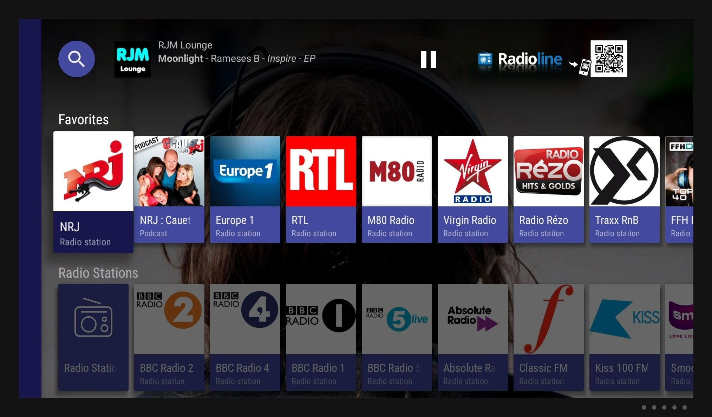
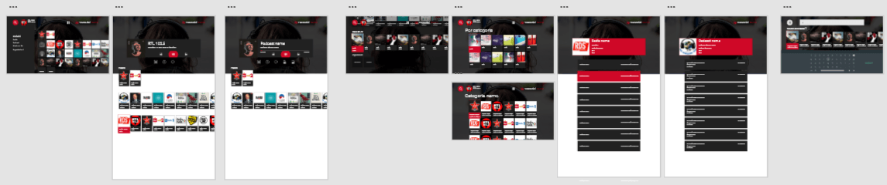

TV Interface
Radioline for TV - HTML5, Android & QML apps








My second big work at Radioline was to adapt the service to the TV platform. This is an interesting interface to work with, quite limited by the box and TVs processors and the distance due to the TV place in the room; you have to be big and bold more than on any ever screen. I designed an app which was developed on HTML5, Android TV or even Q? ecosystems that we declinated and maintained for more than 12 famous partners such as Virgin, Opera (now Vewd), Foxxum, Proximus, Free etc. 2 years later, the part of the TV audience on Radioline reached +30%!
Created for: Radioline
Completed: 2015-2019.
Skills:Interface, Adobe XD, Figma
Radioline
Radioline Youtube channel